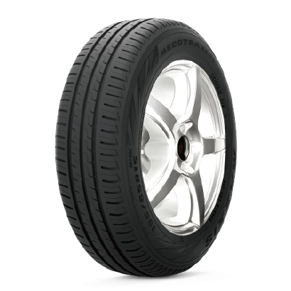

Maxxis MA-P5 165/55R14

RM 138.00
The Maxxis Mecotra MA-P5 is a fuel-efficient passenger car tyre designed for a quiet and comfortable driving experience. Its advanced triple-polymer compound reduces rolling resistance and promotes even tread wear for longer tyre life. The silica-enhanced rubber compound improves wet road grip, while its optimised tread pattern reduces road noise and enhances water drainage. Ideal for daily commuting and highway driving.
Klang Hock Li Tyre Services Sdn Bhd, Klang, Selangor, Malaysia.
View live product details and enquire